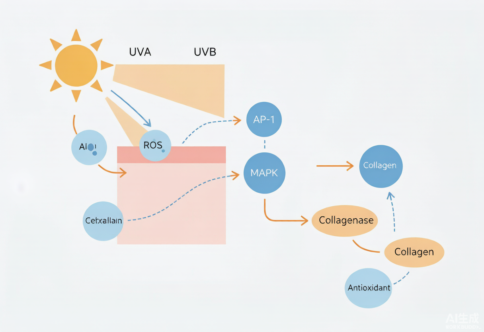

一句话结论(双视角)：工程师:光老化核心是「UVA/UVB → 过量 ROS → MAPK/AP-1 激活 → MMP-1 等基质金属蛋白酶上调 → 胶原 I/III 被降解;同时 TGF-β/Smad 被抑、新胶原合成下降」,弹性纤维也变性(日光性弹力纤维症)。防护=广谱防晒(挡源头)+ 抗氧化(清 ROS)+ 抗 MMP/促胶原(修护)三道防线。产品经理:防晒是抗老的第一名,但「只防晒」叙事已老;消费者要的是「防晒+抗氧+淡纹」一体化——把 MMP 抑制、胶原新生讲成「边防晒边修老」,才是溢价点。
一、机理:从光子到皱纹的级联
UVB(290–320nm)主要伤表皮、致红斑与 DNA 损伤;UVA(320–400nm)更深达真皮、主导慢性光老化与色素。共同路径:① 光吸收/内源光敏剂产生活性氧 ROS(超氧、H₂O₂、·OH);② ROS 激活 MAPK(p38/JNK/ERK)与 AP-1(c-Fos/c-Jun)转录复合体;③ AP-1 上调 MMP-1(胶原酶)、MMP-3、MMP-9,直接降解胶原 I/III 与弹性蛋白;④ 同时 TGF-β/Smad 通路受抑,新胶原合成下降——「降解多、合成少」,真皮层塌陷成皱纹。弹性纤维变性、异常堆积成日光性弹力纤维症;色素侧:UVA/可见光经 NO、PGE₂、黑素细胞刺激,致色斑与肤色不均。
- 关键酶 MMP-1(胶原酶)是「溶胶原」主角;维A类(视黄醇/HPR)正是通过抑 MAPK/促胶原来对抗它。
- ROS 是上游开关:清除 ROS(抗氧化)可切断整条级联——这就是为什么 VC/VE/阿魏酸组合是防晒的「黄金搭档」。
- 可见光(蓝紫光)也产 ROS 并促黑,「全波段防护」需把可见光的铁氧化物/抗氧化也纳入。
- 与神经美容呼应:UV 也激活 TRPV1/神经源性炎症,光防护与「舒缓降敏」在敏感肌抗老里并用。
二、前沿证据(2023–2026)
- 2025 Am J Clin Dermatol 综述系统梳理 photoaging 分子机制(UVR→氧化应激→MAPK/AP-1→MMP→基质降解),并确认 TGF-β/Smad 抑制是胶原「负平衡」主因。
- VC + VE + 阿魏酸三联(Duke 经典)协同抗氧化、将维C光稳定性与防护增效,仍是临床证据最足的 topical 抗氧化组合。
- 虾青素、麦角硫因(ergothioneine)、白藜芦醇作为新一代抗氧化/抗 MMP 成分,2025–2026 多篇研究支持其光保护协同。
- DNA 光修复酶(光裂合酶 photolyase / Micrococcus luteus 溶胞物)可辅助修复 UV 致 CPD 损伤;口服 Polypodium leucotomos 提取物的光保护证据在累积。
- 广谱有机滤剂升级:Tinosorb S/M、Uvinul A Plus(双-乙基己氧苯酚甲氧苯基三嗪/二乙氨羟苯甲酰基苯甲酸己酯)补齐 UVA 长波短板,与 avobenzone 复配实现真正全波段。
三、工程师配方落地(防护靶点→原料→添加量→配伍/pH/稳定)
光防护配方落地表
| 防护靶点 | 推荐原料(INCI) | 建议添加量 | 配伍·pH·稳定要点 |
|---|---|---|---|
| 挡 UV(化学滤剂) | Avobenzone + Tinosorb S/M + Uvinul A Plus + Octinoxate | 总量按法规上限(各滤剂单独限) | avobenzone 需稳定剂(奥克立林/VE);UVA+UVB 互补;pH 5–7 |
| 挡 UV(物理) | ZnO / TiO₂(纳米,表面处理) | 5%–25% | 分散防聚团;肤感靠处理;广谱+可见光靠 Iron Oxide 复配 |
| 清 ROS(抗氧化) | VC(抗坏血酸/AA2G)+ VE + 阿魏酸 | VC 5%–15%;VE 0.5%–1%;阿魏酸 0.5%–2% | pH<3.5 维C稳定;避光避热;与防晒同体系需相容 |
| 抗 MMP/促胶原 | 视黄醇/HPR、玻色因、胜肽 | 视黄醇 0.1%–0.3%;HPR 更低 | 夜间用;HPR 更稳更温和;与防晒叠成「日夜抗老」 |
| DNA 修护 | 光裂合酶 / Micrococcus lysate | 按供应商建议 | 低温/避光;与抗氧化协同 |
| 口服光保护(概念) | Polypodium leucotomos 提取物 | 概念宣称场景 | 属食品/补充剂边界,化妆品不得宣称口服疗效 |
四、产品经理视角 · 市场沟通
防晒是抗老第一名,但「只防晒」叙事已卷不动。升级路径:① 从「防晒黑」→「防晒老」(胶原守护);② 从「单一防晒」→「防晒+抗氧+淡纹」三合一;③ 把 MMP-1 抑制、胶原新生翻译成「边防晒边修老」。宣称抓手:「广谱 SPF/PA」「对抗光老化」「守护胶原蛋白」可用;「治疗光损伤/皮肤病」属医疗宣称违规。可见光/蓝光的「全波段」是 2026 新叙事点。
五、合规红线
- 防晒、美白均为特殊化妆品,需注册(特妆)并取得功效评价;普通化妆品不得宣称「防晒」「美白」。
- 防晒剂须用《规范》准用清单内、且在限量内;新滤剂按新原料报送。
- SPF/PA 数值宣称须有人体功效试验支撑,不得夸大;「100% 防护」「永久防晒」违规。
- 「抗光老化」「守护胶原」可作化妆品功效宣称(需评价);不得宣称治疗光损伤、皮肤病或医疗用途。
六、行动清单(今日可落地)
- 极光系列评估「日间防晒+VC/VE/阿魏酸抗氧化 + 夜间 HPR/玻色因」日夜抗老组合。
- 筛查配方滤剂覆盖:是否有 UVA 长波(Tinosorb S/M、Uvinul A Plus)+ 可见光(氧化铁)短板。
- 建立「ROS 清除—MMP 抑制—胶原合成」体外评价(SOD/DPPH + MMP-1 ELISA + 胶原前体),为抗老宣称备证。
- 读后对我说「加工这篇」,我压成简洁知识块入 Topics/化妆品护肤/抗衰。
- 缺口:仓库抗衰精华卡侧重成分,应补「光老化机制—MMP」子节并与 PLLA/神经美容互链。
附图

参考资料与出处链接
- Photoaging: Current Concepts on Molecular Mechanisms (Springer 2025) https://link.springer.com/article/10.1007/s40257-025-00933-z
- Photoaging: molecular mechanisms, clinical impact (综述 2025) https://evk.southam.pub/index.php/evk/article/view/251
- UV Photoaging Mechanism: ROS→MMP→collagen (机制解析 2026) https://www.skincareful.care/trends/uv-photoaging-mechanism-collagen-molecular-science/
- 光老化机制通路及应对方法(知乎 2025) https://zhuanlan.zhihu.com/p/1987163659911321417
- Phospholipid vesicular delivery (IJMS 2025, 递送协同参考) https://www.mdpi.com/1422-0067/26/6/2484
- Advancing lipid nanoparticles in cosmetic treatments (ScienceDirect 2024) https://www.sciencedirect.com/science/article/abs/pii/S2215038224000499